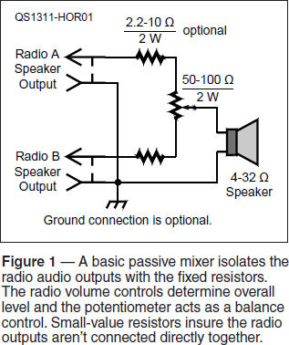
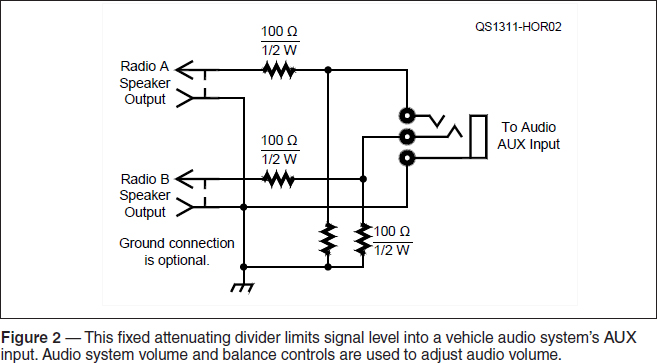
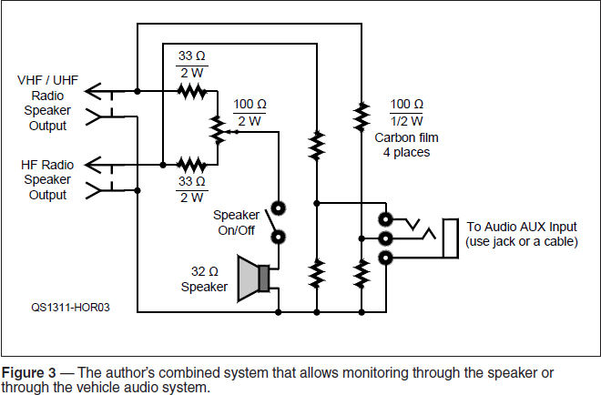
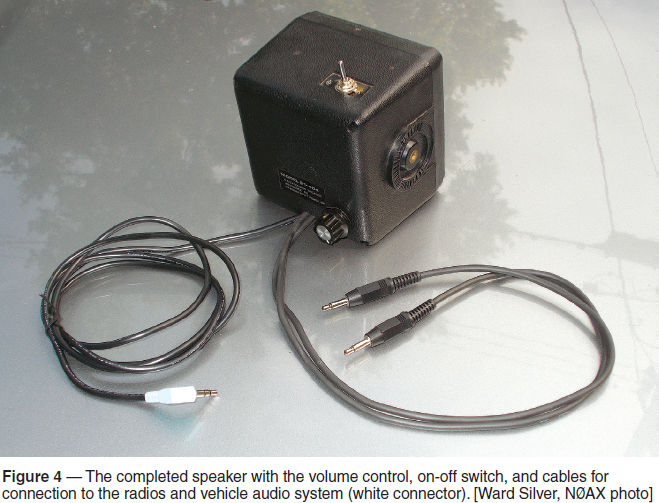

Practical Station Practices
Experiment #130 — Communication Speakers
Okay, okay — enough with the math and the phasors and the coordinates! Several columns dedicated to phase rotation and spinning around at the carrier frequency is enough to make anyone a bit dizzy, the author included.1 I’m sure we all need something more on the order of drilling and soldering, so let’s return to the workbench and cobble together an accessory that has a home in every mobile station — the communications speaker. But we’ll jazz it up a bit.
We all get speakers built into our mobile rigs. However, they are often chosen simply because they will fit in the box and not because they are the best solution for competing with wind and road noise in a vehicle, usually while trying to understand the limited fidelity speech of another operator, who may also be driving.
An external communication speaker is substantially larger and able to reproduce speech with better fidelity at volumes that can overcome ambient noise. Many vendors offer fine products in this regard and if what you need is only one speaker for one radio, that’s probably the right solution.
But as our friends and family well know, one radio is rarely enough! Getting separate speakers for each rig leads to clutter, as well as a volume arms race as each radio is turned up louder and louder to be heard.
The most common multi-radio mobile installation has a pair of rigs, perhaps a ham radio and a scanner (or, as in the author’s car, a VHF/UHF mobile FM transceiver and an HF rig). If you only have a single speaker, it’s simple to add a switch and select one or the other. Yet it’s pretty common to have both radios on at the same time — perhaps you are operating HF and keeping an ear out for a call on the repeater or vice versa.
Passive Mixers
The simplest way of being able to satisfy the requirement of listening to either or both radios at the same time is to substitute a balance control for the A/B switch. By adjusting the balance control, you can listen to either radio A, radio B or a combination of both. Balance should not be confused with pan (from “panoramic”) which refers to positioning a particular audio source in multiple audio channels (thedawstudio.com/Tips/PanPots.html).
Figure 1 shows a very simple way of being able to listen to either or both radios in a single speaker using a passive balance control. The speaker outputs of most radios can supply a few watts of audio power into the typical communications speaker impedance of 4 to 32 Ω. A fixed resistor is in series with each speaker output to isolate the individual radio audio outputs from each other. The variable resistor is connected so that when the wiper is at either end, the speaker gets full output from one radio and very little from the other.

Because of differences in radio audio outputs, available speaker impedances, and your personal volume preferences, a range of values is shown on the schematic. If you want a lot of volume, choose lower values for the fixed resistors, with the tradeoff being higher minimum volume for the undesired channel. Wirewound resistors are fine in this low-frequency application. This simple circuit can be installed inside the speaker housing, too.
It may take a couple of tries before you get the right combination of volume settings on the radios and resistor values in the mixer. Because the radios are different, the fixed resistor values may need to be different, too. In fact, the fixed resistors can be replaced by potentiometers if you like.
Active Mixing
A more flexible method of controlling the volume from more than one source through a single speaker is to use an active mixer — an amplifier that combines audio from multiple inputs with each level adjustable in the output. There are many types of active mixers, ranging from a simple summing circuit based on an op-amp2 to sophisticated designs with two or more output channels that have pan, balance, and frequency equalization on each input. These may have a place in the well-rounded shack at home but we’re talking about your mobile station, so let’s not go overboard.
You probably already have a type of mixer in your vehicle — it’s part of the audio entertainment system. A standard feature on most vehicle audio systems these days is an AUX (auxiliary) input with a three-conductor, stereo and a 1⁄8 inch phone jack mounted somewhere on the dashboard or console. Plug in your stereo audio player or smartphone and away you go. The audio from your ham rigs can be plugged into the stereo, too, if you make sure to keep the signal levels down. Figure 2 shows an audio attenuator circuit suitable for use with the audio system’s AUX input.

In this circuit, both radio outputs are still connected to a fixed resistor but now they are not connected together in the output balance control. Instead, a resistive divider limits the signal level into the AUX input. If the load connected to the resistive dividers is 32 Ω, typical of small headphones or earbuds, the voltage from each channel is attenuated by about 14 dB. How did I determine that? Since 32 Ω // 100 Ω ≈ 25 Ω (// is used to indicate “in parallel with”), the output is reduced by 20 log (25 / (100+25)) = 13.9 dB. If you need more volume, decrease the input fixed resistor value. A high audio system input impedance reduces attenuation to 6 dB.
With the output of the divider connected to audio system’s AUX input you can listen to one radio in the left channel and the other in the right channel. The fidelity of my car’s stereo system is a lot better than that of the speakers in the radio! Non-hams find the audio system’s output a lot easier to listen to, as well. Hams have gotten used to really poor mobile audio with lots of distortion and no bass. You might be surprised at how good a radio can sound if its output isn’t trying to overdrive a minimal speaker over the road noise.
Customize It!
Don’t stop here — add more features. You can use a splitter at the AUX input for your audio player, but why not add a parallel jack and switch on the speaker housing? Add a headphone jack or adjustable resistors for independent level setting. Don’t be afraid to experiment with different resistor values and configurations.
In my vehicle, I wanted to be able to switch the speaker on or off independently of the audio system so I could listen to both radios and some entertainment at the same time. Figure 3 shows how I have my circuit configured and Figure 4 shows a photo of the final product. The circuits of Figures 1 and 2 are connected “in parallel” to the radio audio outputs so that they can act independently.


I used what I had in my junk box. These values were “close enough” for reasonable radio volume settings. It got the job done and let me proceed with hamming it up. As a bonus, I have to say that listening to a big CW pileup with the widest IF filters when it’s played through a powerful audio system is some kind of amazing. It’s not quite opera, doc, but it’s close!
Notes
1All previous Hands-On Radio experiments are available to ARRL members at www.arrl.org/hands-on-radio.
2Silver, Ward NØAX, “Experiment 3: Basic Operational Amplifiers,” QST, April 2003, pp 63-64.